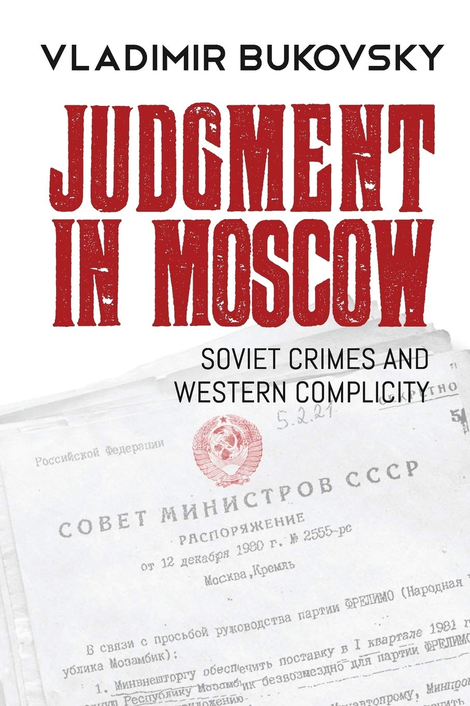

Olavo de Carvalho
Autor é um exilado russo. Foi o primeiro pesquisador a entrar nos arquivos do partico comunista soviético, descobrindo que a KGB financiava praticamente toda a mídia de centro-esquerda da Europa. Tão logo dissolvida oficialmente a URSS, seus agentes de influência na Europa e nos EUA se mobilizaram numa bem sucedida operação para bloquear toda investigação dos crimes soviéticos.
Ver também
- Site Oficial (https://www.vladimirbukovsky.com/judgment-in-moscow)
- (Resumo) Judgment in Moscow (https://bukovsky-archive.com/judgment-in-moscow)
- Capítulo 1: Judgment in Moscow (https://www.breitbart.com/national-security/2013/11/27/judgement-in-moscow)
- (Review) Judgment in Moscow: Soviet Crimes and Western Complicity (https://www.nyjournalofbooks.com/book-review/judgment-moscow)
- (Review) Thoughts after Reading Judgment in Moscow (http://www.judeochristianamerica.org/JudgmentMoscow.htm)
- (Review) Bukovsky’s Judgment (https://www.nationalreview.com/magazine/2019/06/03/vladimir-bukovskys-judgment)
- (Review) A Dissident’s Testimony: Vladimir Bukovsky’s 'Judgment in Moscow' Now in English (https://pjmedia.com/news-and-politics/bruce-bawer-2/2019/03/14/a-dissidents-testimony-vladimir-bukovskys-judgment-in-moscow-now-in-english-n64410)